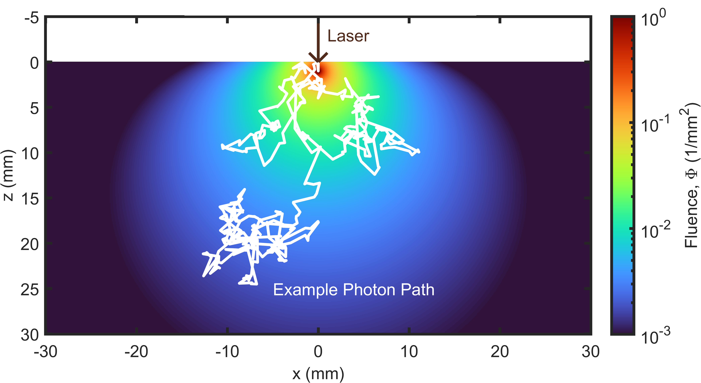
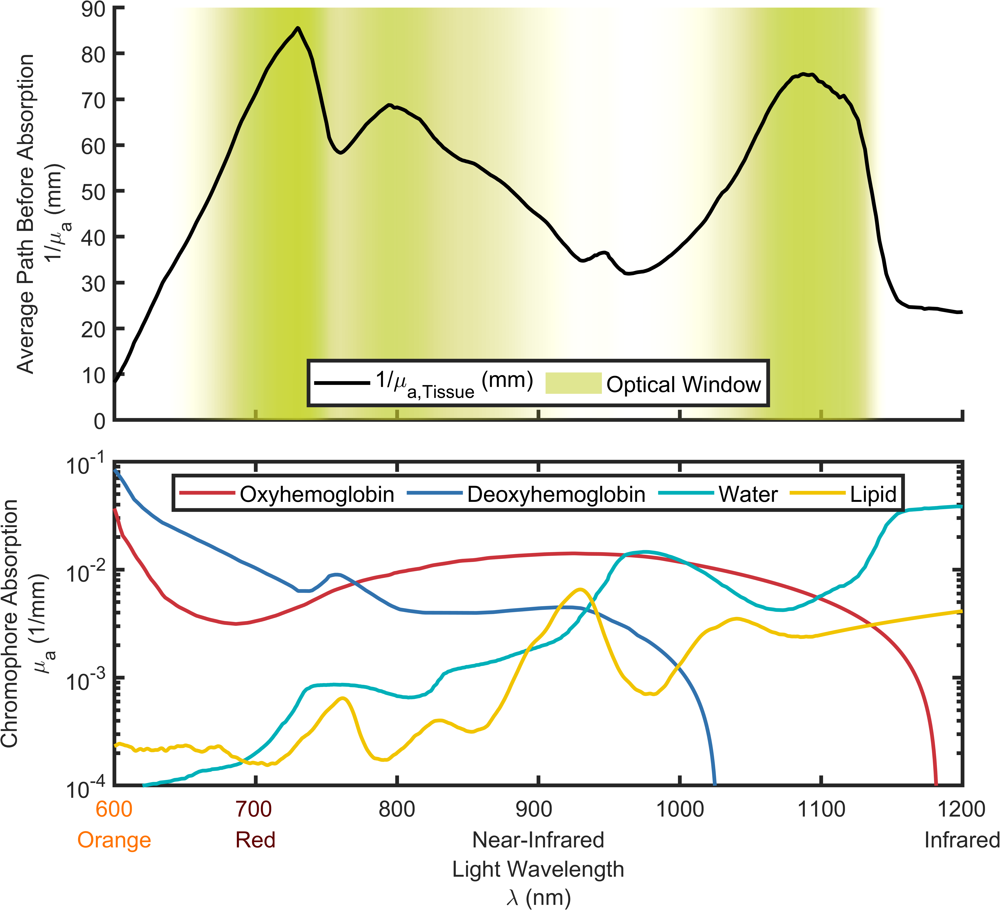
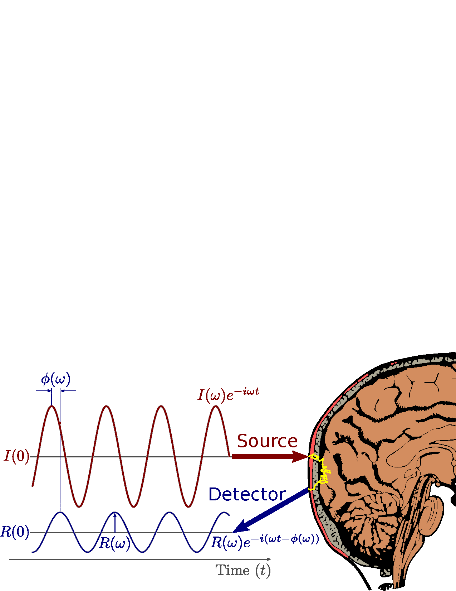

A Brief Introduction to Frequency-Domain Near-Infrared Spectroscopy
A Brief Introduction to Frequency-Domain Near-Infrared Spectroscopy



Symbols: phase (φ), angular modulation frequency (ω), source Intensity (I), & detected Reflectance (R)
To understand what FD NIRS is we must first understand the optically diffuse medium. In an optically diffuse medium light moves about by randomly changing the direction it’s traveling. Particles representing packets of light are called photons. The act of these photons randomly changing direction is called scattering. Therefore, one says that an optically diffuse medium is one in which the behavior of photons is mostly described by their scattering. An example of a possible random photon path from scattering can be seen in Figure 1.1.
In reality many media may be described in this optically diffuse way. For example, a cloud is optically diffuse. In a cloud photons enter, randomly scatter within, then exit. Due to the random scattering of the photons, your eye can not determine where a photons entered the cloud, thus the cloud appears opaque or white. Expanding on this example you may realize that, in general, what is described as an optically diffuse medium is seen as opaque. Examples of this are the aforementioned cloud, a glass of milk, or even biological tissue.
Scattering is not the only thing that may happen to a photon in a diffuse medium. A second common property that a diffuse medium has is absorption. This is when photons die when they interact with the medium. Take a black cup of coffee, this medium is primarily absorbing since photons die off as they travel through the liquid. But black coffee has little scattering since the photons do not change direction much.1 If the coffee is strong and dark we know that it has high absorption, while if it is light and watery we know it has low absorption. Now imagine we add milk to the coffee, this will make the coffee opaque as we have just added scattering and the photons’ directions within the liquid are now randomized. If we add cream instead of milk we may notice the coffee is even more opaque since cream has higher scattering compared to milk.
Both absorption and scattering are probabilistic statements since every time a photon interacts with a piece of the medium there is a some chance that it will be absorbed, scattered, or neither. This is probabilistic because there is chance or probability associated with these events, just like when flipping a coin or rolling a dice. Since these interactions happen billions of times within the medium, the average behavior of the photons becomes rather predictable. In the coin flipping analogy, this is the same as saying that, if you flip a coin billions of times, we can predict that very close to half those times it will come up heads. An example of this predictable average distribution of the photons can be see in Figure 1.1. This is in some ways amazing since we have stared with random events and can draw predictable conclusions. Focusing on diffusion theory, a theory that describes a optically diffuse medium, this average behavior can be modeled using two optical properties that are associated with the absorption probability and probability of scatter in a random direction. These properties are named the μa and the μ′s.
FD NIRS essentially seeks to measure these two properties, that is the μa and the μ′s, to describe a diffuse medium. In general μa provides chemical information about the medium, like the strength of the coffee in the above example, and μ′s provides structural information, like the amount of fat droplets from cream in the coffee. A popular application of NIRS is in the measurement of biological tissues. In this cause μa may give us information about concentrations of blood. The μa of blood is dependent on the λ, which can be thought of as the color of the light. A typical dependence of μa on λ is shown in Figure 1.2. NIRS is called NIRS because the technique focuses on a range of colors or λs starting from red and going to near-infrared,2 with the former being visible by the human eye and the latter not. The reason for this choice of λs is that biological tissue tends to have lower absorption in this range, thus photons can probe further into tissue. In-fact Figure 1.2 shows the average path before absorption versus λ to show this so-called optical window of tissue.
Now lets consider how NIRS measurements are physically done. In the most basic sense some source of light is used to inject3 photons into a medium, then that light is detected at some other point at some ρ.4 The way the source light varies in time describes the flavor of NIRS. This is either CW, FD, or TD. In the case of CW the source light does not change with time, for FD the brightness or intensity of the light oscillates as a sinusoidal wave,5 and finally TD uses a source with a brief pulse of light. Focusing only on the interpretation of FD, the detected light will have some oscillation amplitude (id est I) and some time shift which is called its φ shift. This provides two pieces of information about the behavior of light within the medium which then may be translated into the two desired properties, the μa and the μ′s.
As mentioned above, a notable application of diffuse optics and NIRS is on biological tissues . However, diffuse optics finds a variety of applications in several other fields of study. In food science , it may be applied for inspection or evaluation . In pharmaceutical manufacturing, diffuse optics may join other process analytical technologies, for example to analyze and characterize particles or powders . A few other examples include archaeological soil analysis , dendrology (study of wood) , and art authentication . In the study of biological tissue, diffuse optics finds applications in basic research, medical diagnostics, and physiological monitoring. Examples include clinical brain monitoring , the study of brain activation , breast imaging , and muscle measurements in sports science . This is by no means an exhaustive list of the possible applications of NIRS and diffuse optics.
Regardless of application, a laboratory can purchase a commercially available FD NIRS instrument for their research. In this work the Imagent was utilized for all FD NIRS experiments. These instruments provide FD measurements at multiple discrete λs and retrieve the I and φ of the detected FD light. Therefore, they can be used either for absolute measurement of optical properties μa and μ′s or dynamic measurements of μa which are interpreted as hemodynamics.
We conclude this introduction with a specific example of a FD NIRS experiment applied to the human brain. When a person experiences some visual stimulus, it is expected that the visual portion of their brain will begin to utilize more oxygen. This causes the body to increase BF to the visual cortex and so that more oxygen may be supplied there. An increase in BF is indicated by an increase in the concentration of O and a decrease in the concentration of D. Since these concentrations are connected to μa by Figure 1.2, one may measure this change using FD NIRS. Therefore an experiment may be devised to make these so-called fNIRS measurements as shown in Figure 1.3. Here sinusoidal light is injected into the subject’s head where it diffuses through the brain before being detected. The detected light’s phase shift and amplitude is measured and may be converted to optical properties and blood concentrations. Through analysis the changes in O and D may indicate BF and thus brain activity. This example is just one application in which FD NIRS may be used to make measurements on tissue. The following dissertation will discuss details on how to collect and analyze these FD NIRS data, including the case of this example experiment, as well as various other experiments and applications.
Credit for this example goes to Prof. Steven Jacques.↩︎
This near-infrared optical wavelength (λ) range is approximately 600 nm–1000 nm.↩︎
By inject we simply mean that photons are made to enter the medium, this can be as simple as shining a light at the optical medium.↩︎
source-detector distance (ρ) is typically on the order of 10 mm.↩︎
The modulation frequency (fmod) is on the order of 100 MHz for Frequency-Domain (FD).↩︎